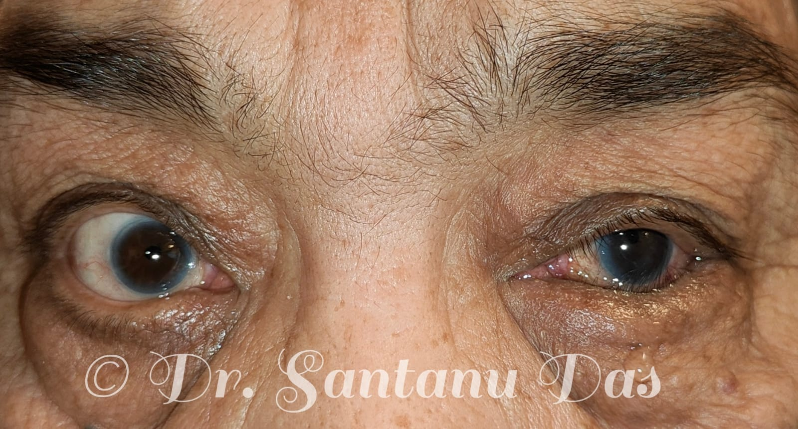
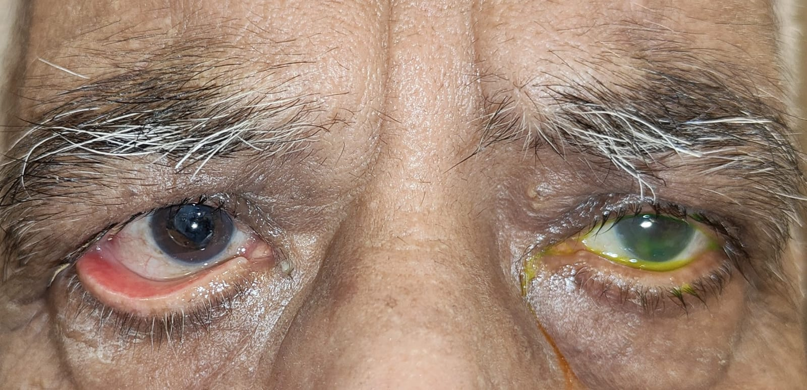
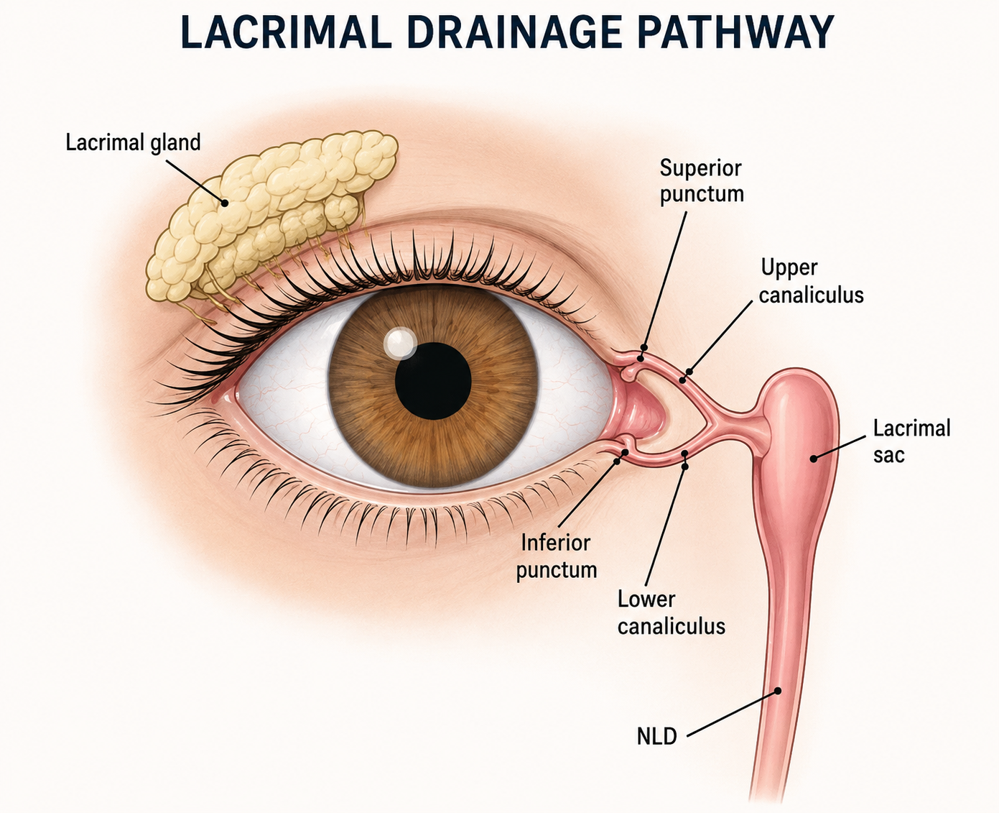

Patient Information
Comprehensive medical and surgical management protocols offered for advanced oculoplastic, orbital, lacrimal, and cosmetic conditions.
Ptosis
Ptosis
- Ptosis is drooping of upper eyelid.
- It can be:
- Congenial
- Aponeurotic or involutional.
- Myogenic ptosis due to myasthenia gravis, CPEO.
- Neurogenic due to third nerve palsy.
- Mechanical due to any lesion on the upper lid.
Symptoms
- Drooping of upper lid blocking vision.
- Chin up position.
- Amblyopia especially in congenital ptosis.
- Constant use of the eyebrows to lift up the upper lid leading to eye strain, heaviness and tiredness.
Treatment
- Almost always surgical.
- Congenital ptosis:
- Frontalis flap surgery
- Frontalis flap plus levator resection surgery.
- Frontalis sling surgery.
- Maximal levator resection surgery.
- Fascia Lata sling surgery.
- Aponeurotic ptosis:
- Levator advancement
- Levator resection.
- Myogenic and neurogenic ptosis:
- Crutch glasses.
- A variety of surgeries can be considered depending upon the levator muscle function like; levator resection or frontalis sling, frontalis flap etc.
- Mechanical ptosis:
- Treatment of the underlying cause.

Ptosis Evaluation View 1

Vision & Astigmatism
Ectropion & Entropion
Ectropion (Outward Turning of Eyelid)
- Most commonly occurs due to aging, but can also happen due to trauma and previous surgery.
Symptoms Include:
- Redness
- Dryness
- Epiphora (watering)
Treatment
- Treatment is mainly surgical.
Entropion (Inward Turning of Eyelid)
- Most commonly happens due to aging, trauma, previous surgery, or conditions like Stevens-Johnson syndrome.
Symptoms
- The eyelashes touch the ocular surface causing severe irritation, redness, and epiphora.
Treatment
- Treatment is primarily surgical, though Botox can be used temporarily for patients unfit for surgery.

Entropion Repair View

Ectropion Correction View
Socket reconstruction
Socket reconstruction
- Socket reconstruction is a surgical procedure used to rebuild and repair an anophthalmic socket. We use orbital implants, mucous membrane grafts and dermis fat grafts to restore the lost volume and to reconstruct the fornix so that a customized prosthetic eye can be placed.
Surgeries that are commonly done include:
- Evisceration with ball implant
- Enucleation with ball implant.
- Dermis fat graft with fornix formation sutures.
- Mucous membrane grafts are used to deepen shallow fornix by replacing the lost conjunctiva.
- Post evisceration and enucleation, a customized prosthetic eye can be placed after approximately 6 weeks.
- Post dermis fat graft and mucous membrane grafts, a customized prosthetic eye can be placed after approximately 2 months.
- The dermis fat graft is harvested from the abdomen or buttock.
- Mucous membrane graft is harvested from the buccal cavity or lips.
- PMMA ball implants are commercially available.

Socket Reconstruction View 1

Socket Reconstruction View 2
Blepharoplasty
Blepharoplasty Overview & Techniques
- Blepharoplasty is a surgical procedure which improves the appearance of the eyelids.
- It can be performed on both the upper and lower lid and can be combined with other surgical procedures like brow lift, internal browpexy, and face lift.
- Upper Lid Blepharoplasty: We usually excise a thin strip of skin and the prolapsed fat through a lid crease incision.
- Lower Lid Blepharoplasty: We reposition the prolapsed fat transconjunctivally followed by excision of a thin strip of skin.
- Blepharoplasty is usually performed under local anaesthesia.
Preoperative Preparation
- Routine blood investigations.
- Stop taking aspirin, blood thinners, multivitamins, and herbal medications as these can increase the risk of bleeding.
- Quit smoking.
Who Can Undergo Blepharoplasty?
- Patients having loose, sagging upper lid skin with lateral hooding blocking vision.
- Upper lid puffiness due to fat prolapse.
- Lower lid bags and excess lower lid skin.
- Patients with realistic expectations are good candidates for blepharoplasty surgery.
Postoperative Recovery & Conclusion
- Recovery: The swelling and the ecchymosis gradually resolves over a period of 6 weeks to 2 months. Suture removal is done after 10 days.
- Conclusion: Blepharoplasty is predominantly a cosmetic procedure, which restores confidence and in certain cases improves the field of vision.

Upper lid dermatochalasis and lower lid bags

Upper lid dermatochalasis
Thyroid Eye Disease
Thyroid Eye Disease
- Thyroid eye disease is an autoimmune disease causing inflammation and swelling of the structures around the eye.
- It can cause swelling of the extraocular muscles, orbital fat leading to optic nerve compression and diminution of vision in certain cases.
- Thyroid eye disease can affect people with hyperthyroidism, hypothyroidism and normal thyroid levels.
- Signs and symptoms:
- Proptosis is most commonly bilateral, but can be unilateral also.
- Eyelid retraction
- Restriction of eye movement.
- Diminution of vision in cases of dysthyroid optic neuropathy.
- Double vision due to extraocular muscle swelling and fibrosis.
- Signs of inflammation like ocular surface redness, chemosis, conjunctival injection, pain on eye movement.
- Thyroid eye disease has two phases:
- Active phase: Inflammatory signs, pain keeps on fluctuating. This phase may last from 6 months to approximately 2 years. It can vary from person to person, that's why continuous monitoring is required.
- Inactive stage: During the inactive stage, signs of inflammation subsides and the eye looks quite. Proptosis, double vision, movement restriction persists in the inactive stage. Surgeries to correct the above mentioned abnormalities are usually done in the inactive stage.
- Treatment:
- Anti thyroid medications to achieve euthyroid status.
- Stop smoking.
- Intravenous steroids are most commonly used in the active phase.
- Radiation can be used in combination with intravenous steroids.
- Other medicines like rituximab, tocilizumab, cyclosporine can also be used as second line therapy in case of recurrent active thyroid eye disease despite the use of i.v steroids.
- In the inactive stage rehabilitative surgeries can be done to correct proptosis, squint and lid retraction.
- Orbital decompression
- Squint surgery
- Lid retraction repair.

Thyroid Eye Disease View 1

Thyroid Eye Disease CT scan

Stable Phase of Thyroid Eye Disease

Active Thyroid Eye Disease
Epiphora (Watering From Eyes)
Epiphora Overview & Definition
- Epiphora is the medical terminology for excessive watering from the eyes.
Causes of Epiphora
- Blockage in tear drainage pathway: Narrow/blocked punctum, canalicular stenosis/blockage, canaliculitis, and nasolacrimal duct blockage.
- Eyelid abnormalities: Lid laxity, ectropion, entropion, epiblepharon, euryblepharon, and trichiasis.
- Ocular & Surface Abnormalities: Allergy, infection, inflammation, foreign body, pterygium, and conjunctivochalasis.
- Dry Eye & MGD: Environmental dryness, Sjogren's syndrome, post-LASIK reflex watering, and meibomian gland dysfunction.
- Excessive Production: Hypersecretion of tears.
Treatment Options
- Nasolacrimal duct blockage: External DCR or Endoscopic DCR with stenting.
- Canalicular blockage: Trephination with stenting or trephination plus DCR with stenting.
- Punctal stenosis: 3-snip procedure with or without stenting.
- Canaliculitis: Medical treatment or Canaliculotomy with curettage.
- Lid abnormalities: Surgical correction.
- Conjunctivochalasis: Surgical tightening of the loose conjunctiva.
- MGD: Medical management, hot fomentation, IPL therapy.
- Dry eye: Tear substitutes and treatment of the underlying condition.
- Ocular infection and allergy: Medical management.

Lacrimal Drainage Pathway
Oculofacial Trauma
1. Overview & Causes
- Oculofacial trauma involves physical injury to the eyelid, adnexal structures, eye, face, and bony orbit.
- Most common causes: Assault, road traffic accidents, self-falls, and blunt/sharp object trauma.
2. Signs & Symptoms
- Redness of the eye, subconjunctival haemorrhage, and periorbital swelling.
- Extraocular movement restriction, visual loss, and double vision.
- Lid and oculofacial lacerations, restriction of jaw movements, and compartment syndrome.
3. Diagnosis & Management
- Thorough ocular examination to rule out intraocular or optic nerve injury.
- CT scan of face and head to check for facial fractures and muscle entrapment.
- Patient stabilization.
- Paediatric orbital fractures (white-eyed fractures) require immediate surgery to release entrapped muscle and restore normal movement.
- Adult orbital floor fractures causing double vision, muscle entrapment, and enophthalmos require surgical intervention with an implant (best results within the first 2 weeks).
- ZMC fractures and comminuted fractures require open reduction and internal fixation with screws, plates, and implants (multidisciplinary approach).
- Lid, canalicular, and oculofacial lacerations require reconstructive surgery.
- Traumatic optic neuropathy requires immediate high-dose intravenous steroids.

CT scan showing blow out fracture

CT scan showing blow out fracture

Lid laceration repair photo

Periocular swelling post physical assault
Lid Tumors & Surface Disorders
Lid Tumors
- Lid tumors are abnormal growths on the upper and lower lid.
- Can be benign or malignant; most need surgery.
- For malignant lid tumors, a wide excision with 4 mm clear margins is required followed by lid reconstruction surgery.
- The lid surgery to be done depends on the size of the defect post excision.

Lower eyelid naevus

Ocular surface limbal dermoid

Right upper and lower lid xanthelasma

Left upper lid naevus and a sebaceous cyst

Right lower lid cyst of zeiss

Left lower lid malignant lesion, basal cell carcinoma

Left sided ocular surface naevus

Left lower lid malignant lesion, metastatic adenocarcinoma